Halfway through Italy and here's my first real blog post — sorry guys (and gals) who may be reading this. A little bit of laziness, but mostly Hannah monopolizing the computer (kidding...) and simply too much to do in Europe (with not enough time!) would be to blame.
Anyway, here I am, on a train somewhere between Florence and Venice, typing away on my computer, ready to relate our travels thus far. If you've been reading then you already know about the great market in Barcelona and our ticketing hiccup in Amsterdam. The latter was certainly hugely exaggerated, but the market was actually a remarkable experience (if you wanted my opinion).
First off I would like to talk about the plane ride over: we flew KLM, and it was as awesome as an eight hour transatlantic flight can be. You might think that was only because they served free Heineken, but there's more! The personal in-flight entertainment systems had a huge selection of movies, many of which were actually really good. No Marley & Me or 27 Dresses or some other horrendous waste of two hours on this flight. After browsing past all the recent oscar nominees and winners I eventually settled on two movies: Space Jam followed by Megamind. Travel is stressful enough so I didn't want to get caught up in any epic dramas, plus I hadn't seen Space Jam in at least ten years and it was due for a watch. Space Jam was even better than I remembered and Megamind was a refreshingly unique superhero movie.
It wasn't long until we landed in Amsterdam, I had to spend 5 euros on a smoothie, which I'm pretty sure is around fifty dollars, and then hopped on our connection to Barcelona. I finally got some sleep on that flight and recharged a decent amount before we landed with a full day in Barcelona ahead of us.
Hannah and I spent our five days in Barcelona in a happy blur of art museums, cathedrals, walking, tapas, walking, and clutching our wallets while walking around Las Ramblas. The city was absolutely teeming with sites to see and things to do, and even going at our breakneck pace I feel like we only scratched the surface. Every day we experienced something unique and unlike anything I've ever seen or been a part of before.
Fresh off the plane... and after some exploring of the surrounding area, straight to the pub. Upon arrival we learned that FC Barcelona was playing Manchester United for the Champions League final — how could we miss it? FCB dominated in a 3-1 victory, which was followed by the entire city being dumped into Las Ramblas, where people were climbing lamp posts, others were selling beer on the streets, and everyone else was generally just trying to see how tightly they could pack into the street. Tired from being up for almost two days straight, I got just enough into the action so that I could take some photos.
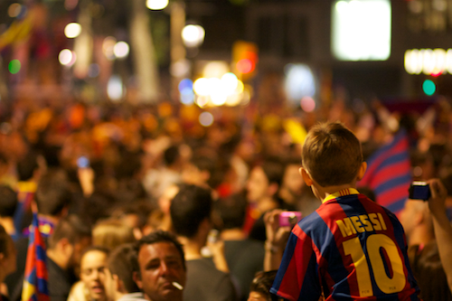
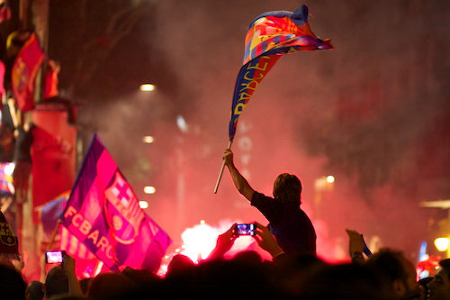
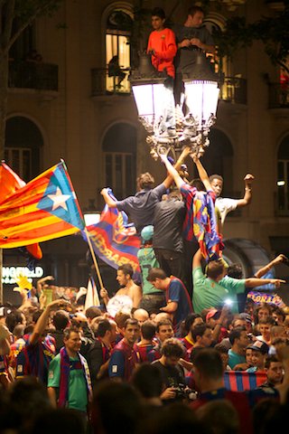
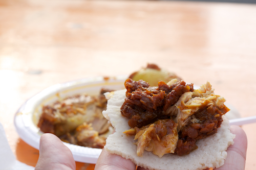
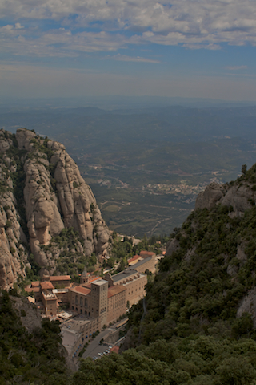
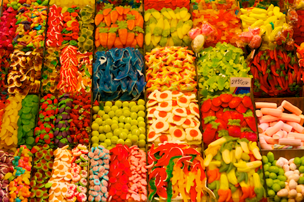
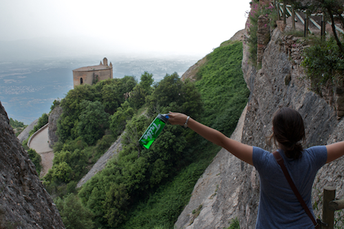
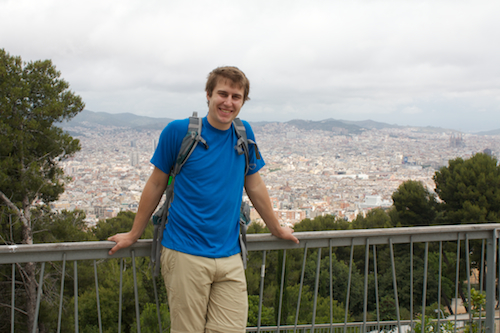
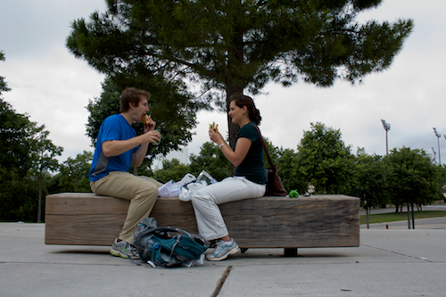
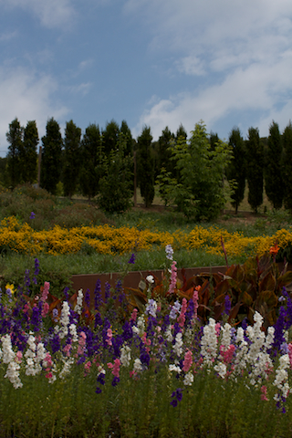
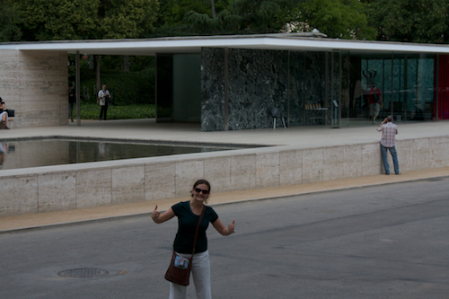
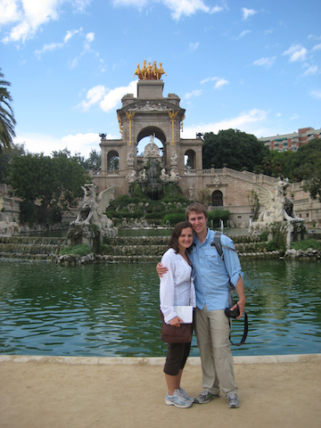
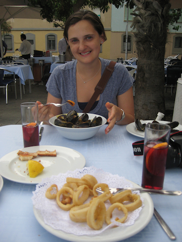
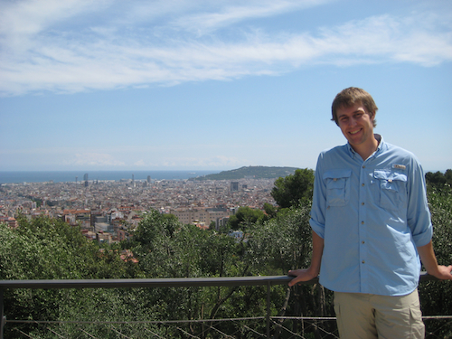
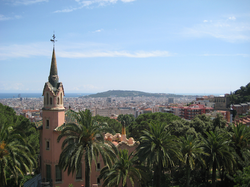
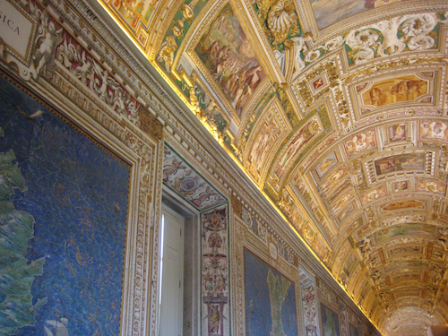
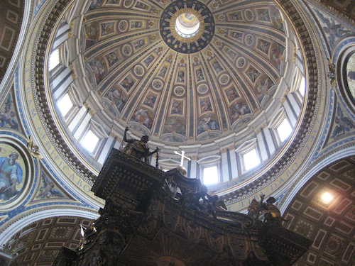
The rest of our stay in Barcelona was a lot more of the normal touristy type — cameras around necks and seeing all the museums and cathedrals — yet still immensely enjoyable. I only wish we could have stayed longer. First of all the food was absolutely incredible, and not just the market that Hannah talked about earlier. Every little restaurant we went to was delicious, and most were pretty cheap. Either order the "menu del dia" or just get 2-3 tapas and drinks and you're good! Awesome tapas to be had at "Tapas, 24." Best thing I had the whole time though would have to have been the calamari. Both fried and grilled (two separate nights), it was absolutely unbelievably delicious. Those two meals have left me seriously doubting my decision to live somewhere I can't get same-day-fresh squid.
But enough about food — the sights! You can't talk about Barcelona without mentioning Antonio Gaudí, or maybe the other way around... regardless, the man was brilliant and left an awesome mark on the city. First there's the remarkable Sagrada Familia, which has been intermittently under construction for over 100 years and isn't even done (wikipedia says it reached the "half-way point" in 2010, and is set for completion in 2032). Despite its incompletion, words can't even describe its magnificence. Probably the most astounding building, period, (not just Church) that I've ever been in. After that is the Parc Güell, another masterpiece. The center with the nifty gingerbread-esque houses was absolutely loaded with tourists but the outskirts of the park seemed just about empty. Great place to spend our last afternoon before catching the ferry to Rome.
In addition to the Gaudí features, we also hit up a fair number of museums including the Picasso Museum, Museu Diocesà, Barcelona History Museum, and the National Museum of Catalonia Contemporary Art in the Palau Nacional; walked around the large hill with the olympic stadium, botanical garden, and a castle; and spent half a day at Montserrat.
Let's start with the Picasso Museum. Although it didn't have a lot of his famous cubist pieces, it possessed an abundance of art from his developing years, starting with his teenage years and going through his academic years and beginning of his professional career. Having never studied art myself, it was really interesting to see in person just how talented of an artist he was from a very early age and how his art developed. The Museu Diocesà, located next to the Barcelona Cathedral, actually had some pretty cool exhibits. The building itself is half new and half several hundred years old, full of religious works from throughout the same timeframe. In addition to those, however, it also housed a Gaudí exhibit and another on Francisco Goya's "The Disasters of War," a collection of drawings depicting the Spanish Independence War, in both gruesome detail and with ghoulish cartoons.
The one destination we couldn't walk to was Montserrat, which is about an hour train ride outside of Barcelona. It's an incredibly old monastery built high in the Pyrenees. Legend says that at its site a statue of the Virgin Mary was found, and after repeated attempts of trying to bring it down the mountain only to have it mysteriously turn up again at the top, the monastery was built around the statue. We spent half a day at Montserrat and went on a nice hike at the top of the mountain, ate lunch at the cafeteria, and walked through the basilica, which was absolutely gorgeous. We actually had to wait to go into the chapel though because it was being used for services. Sometimes it's nice to be reminded that these great structures, usually teeming with loud tourists, are still being used as intended.
All told, our time in Barcelona was wonderful, and an amazing first stop for our epic adventure through Europe. The only downside is that we're still suffering from adjusting to the Spanish custom of eating dinner at midnight. Apparently most restaurants in Europe close earlier than that.